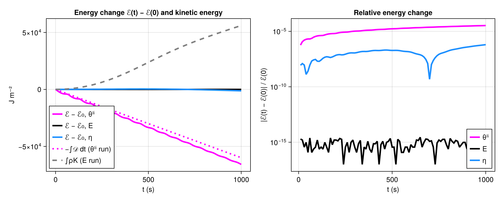
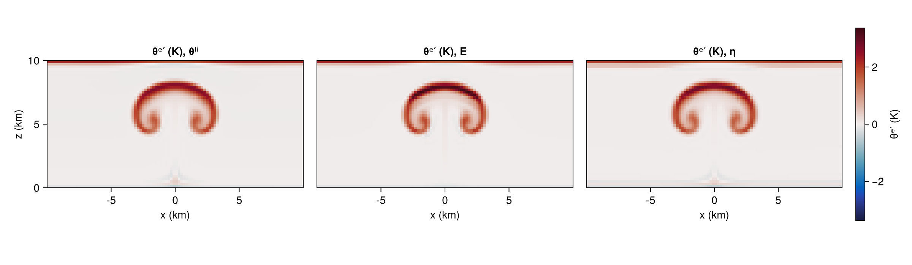

Energy budget of a moist thermal bubble
The cloudy thermal bubble example lifts a warm, saturated bubble through a cloudy environment with the anelastic core. Here we lift the same kind of bubble with the compressible core and ask a bookkeeping question: does the model conserve energy?
On the compressible core Breeze can advance one of three thermodynamic variables:
- the liquid-ice potential temperature $θˡⁱ$ (
LiquidIcePotentialTemperatureFormulation, the default), - the total energy $E = 𝓊 + K + g z$ (
TotalEnergyFormulation), and - the moist entropy $η$ (
MoistEntropyFormulation).
All three describe the same moist air, but they differ in which processes leave them unchanged, and so in which errors they make. The page Choosing a thermodynamic variable derives those differences; this example measures them.
The case is the saturated, moist-neutral bubble of Bryan and Fritsch (2002): a 20 km × 10 km closed box, free-slip walls, no surface fluxes, no radiation, no rain, no turbulence closure. Nothing enters or leaves the box, so the total energy
\[ℰ = ∫ ρ \left( 𝓊 + K + g z \right) \, \mathrm{d}V , \qquad 𝓊 = cᵛᵐ T + ℒˡ₀ qᵛ ,\]
is constant in the exact equations. We run the bubble with each formulation and track $ℰ$ with one diagnostic, computed from the temperature, density, moisture, and velocity that every formulation shares.
using Breezeusing Oceananigansusing CairoMakieusing Printfusing Breeze.Thermodynamics: MoistureMassFractions, moist_entropy, absolute_zero_latent_heatusing CloudMicrophysicsusing CloudMicrophysics.Parameters: Microphysics1MParamsBreezeCloudMicrophysicsExt = Base.get_extension(Breeze, :BreezeCloudMicrophysicsExt)using .BreezeCloudMicrophysicsExt: OneMomentCloudMicrophysics, one_moment_cloud_microphysics_categoriesA saturated, moist-neutral environment
Bryan and Fritsch's environment holds $rᵗ = 0.020$ kg kg⁻¹ of total water everywhere and is saturated everywhere, with a constant moist entropy: a parcel lifted reversibly stays exactly as buoyant as its surroundings. We build it with Breeze's own entropy $η(T, ρ, q)$, so that the environment is neutral in the model's thermodynamics, starting from their surface state $T = 289.8486$ K at $p = 1000$ hPa.
constants = ThermodynamicConstants()Rᵈ = dry_air_gas_constant(constants)Rᵛ = vapor_gas_constant(constants)g = constants.gravitational_accelerationp₀ = 1e5qᵗ = 0.020 / 1.020 # total water mass fraction for rᵗ = 0.020# Saturated moisture at temperature T and density ρ: as much vapor as the air can hold, the rest liquidfunction saturated_moisture(T, ρ) qᵛ = min(qᵗ, saturation_specific_humidity(T, ρ, constants, PlanarLiquidSurface())) return MoistureMassFractions(qᵛ, qᵗ - qᵛ, 0.0)end# Density of saturated air at pressure p and temperature T: iterate p = ρ Rᵐ T with qᵛ = qᵛ⁺(T, ρ)function saturated_density(p, T) ρ = p / (Rᵈ * T) for _ in 1:20 q = saturated_moisture(T, ρ) Rᵐ = (1 - q.vapor - q.liquid) * Rᵈ + q.vapor * Rᵛ ρ = p / (Rᵐ * T) end return ρend# Root of a monotone function f between a and b, by bisectionfunction bisect(f, a, b) fa = f(a) for _ in 1:60 m = (a + b) / 2 fm = f(m) (fm > 0) == (fa > 0) ? (a = m; fa = fm) : (b = m) end return (a + b) / 2endsaturated_entropy(p, T) = (ρ = saturated_density(p, T); moist_entropy(T, ρ, saturated_moisture(T, ρ), constants))T₀ = 289.8486η₀ = saturated_entropy(p₀, T₀)isentropic_temperature(p) = bisect(T -> saturated_entropy(p, T) - η₀, 200, 320)isentropic_temperature (generic function with 1 method)We integrate the hydrostatic balance $∂_z p = -ρ g$ upward with a midpoint rule along this isentrope, and keep the pressure and temperature of the column to interpolate later:
Δz_column = 10z_column = 0:Δz_column:10200p_column = zeros(length(z_column))p_column[1] = p₀for n in 2:length(z_column) p = p_column[n-1] ρ = saturated_density(p, isentropic_temperature(p)) pᵐ = p - ρ * g * Δz_column / 2 ρᵐ = saturated_density(pᵐ, isentropic_temperature(pᵐ)) p_column[n] = p - ρᵐ * g * Δz_columnendT_column = isentropic_temperature.(p_column)function interpolate_column(column, z) n = clamp(floor(Int, z / Δz_column) + 1, 1, length(z_column) - 1) f = (z - z_column[n]) / Δz_column return (1 - f) * column[n] + f * column[n+1]endenvironment_pressure(z) = interpolate_column(p_column, z)environment_temperature(z) = interpolate_column(T_column, z)@info @sprintf("Environment: T(0) = %.2f K, T(10 km) = %.2f K, p(10 km) = %.0f Pa", T_column[1], environment_temperature(10e3), environment_pressure(10e3))[ Info: Environment: T(0) = 289.85 K, T(10 km) = 224.73 K, p(10 km) = 26366 Pa
The bubble
Following Bryan's reference code, the bubble carries the density potential temperature perturbation of the dry benchmark, $θ^ρ = \bar{θ}^ρ (1 + Δθ / 300)$ with $Δθ = 2 \cos^2(π β / 2)$ K inside $β < 1$, and is saturated at the environmental pressure. The density temperature $T^ρ = T (qᵈ + qᵛ Rᵛ / Rᵈ)$ sets the density, and a bisection finds the saturated temperature with that density temperature.
β(x, z) = sqrt((x / 2e3)^2 + ((z - 2e3) / 2e3)^2)Δθ(x, z) = 2 * cos(π * min(1, β(x, z)) / 2)^2density_temperature(T, q) = T * (1 - q.vapor - q.liquid + q.vapor * Rᵛ / Rᵈ)function bubble_state(x, z) p = environment_pressure(z) Tₑ = environment_temperature(z) qₑ = saturated_moisture(Tₑ, saturated_density(p, Tₑ)) Tᵖ = density_temperature(Tₑ, qₑ) * (1 + Δθ(x, z) / 300) ρ = p / (Rᵈ * Tᵖ) T = bisect(T -> density_temperature(T, saturated_moisture(T, ρ)) - Tᵖ, Tₑ - 5, Tₑ + 10) q = saturated_moisture(T, ρ) return (; T, ρ, qᵛ = q.vapor, qˡ = q.liquid)endTᵢ(x, z) = bubble_state(x, z).Tρᵢ(x, z) = bubble_state(x, z).ρqᵛᵢ(x, z) = bubble_state(x, z).qᵛqˡᵢ(x, z) = bubble_state(x, z).qˡqˡᵢ (generic function with 1 method)One microphysics scheme for all three variables
The moist entropy is invariant under phase change only at saturation, so $η$ does not support saturation adjustment (see Choosing a thermodynamic variable). We therefore use non-equilibrium cloud formation for every formulation: cloud liquid relaxes toward saturation on a short timescale $τ = 2$ s, which is close to reversible, and rain autoconversion is turned off, so no rain forms. The cloud droplets still settle slowly, so we close the bottom boundary to sedimentation: no water, and no energy, leaves the box.
function cloud_microphysics() parameters = Microphysics1MParams(Float64; rain_autoconversion = nothing) categories = one_moment_cloud_microphysics_categories(Float64; parameters) cloud_formation = NonEquilibriumCloudFormation(ConstantRateCondensateFormation(1 / 2), nothing) precipitation_boundary_condition = Oceananigans.BoundaryConditions.ImpenetrableBoundaryCondition() return OneMomentCloudMicrophysics(; cloud_formation, categories, precipitation_boundary_condition)endcloud_microphysics (generic function with 1 method)The three models
Each model uses the split-explicit compressible core and WENO advection, and no explicit closure: the only mixing is the implicit numerical mixing of the advection scheme, which is exactly where the formulations differ. The compressible core linearizes its acoustic loop around a reference state, for which we pass the environment's potential temperature and vapor.
For the total energy we use reference_temperature = 273.16, which shifts the origin of energy so that liquid water has zero internal energy at the triple point. This shift changes no physics (the shifted amount is carried by the conserved dry air and total water) but reduces round-off.
grid = RectilinearGrid(CPU(); size = (100, 50), halo = (5, 5), x = (-10e3, 10e3), z = (0, 10e3), topology = (Bounded, Flat, Bounded))cᵖᵈ = constants.dry_air.heat_capacityθ_reference(z) = environment_temperature(z) * (1e5 / environment_pressure(z))^(Rᵈ / cᵖᵈ)qᵛ_reference(z) = saturated_moisture(environment_temperature(z), saturated_density(environment_pressure(z), environment_temperature(z))).vaporformulations = [ "θˡⁱ" => LiquidIcePotentialTemperatureFormulation(), "E" => TotalEnergyFormulation(reference_temperature = 273.16), "η" => MoistEntropyFormulation(),]function bubble_model(formulation) dynamics = CompressibleDynamics(SplitExplicitTimeDiscretization(); base_pressure = p₀, reference_potential_temperature = θ_reference, reference_vapor_mass_fraction = qᵛ_reference) model = AtmosphereModel(grid; dynamics, formulation, thermodynamic_constants = constants, microphysics = cloud_microphysics(), advection = WENO(order=5)) set!(model; T=Tᵢ, ρ=ρᵢ, qᵛ=qᵛᵢ, qᶜˡ=qˡᵢ) return modelendbubble_model (generic function with 1 method)A formulation-agnostic energy diagnostic
The energy per unit mass is assembled from the temperature, the moisture, the velocities and the height. With liquid water at zero kelvin as the origin, the internal energy is $𝓊 = cᵛᵐ T + ℒˡ₀ qᵛ$, with the isochoric heat capacity $cᵛᵐ = qᵈ cᵛᵈ + qᵛ cᵛᵛ + qˡ cˡ$. The kinetic energy $K$ is the mean of each squared velocity component over the two faces of a cell, which is how TotalEnergyFormulation forms it.
We also record the rate at which the settling cloud droplets heat the air by drag, $𝒟 = ∫ ρ qᶜˡ g |wᶜˡ| \, \mathrm{d}V$, with $wᶜˡ$ their sedimentation velocity. The droplets lose potential energy as they fall, and drag hands it to the air as heat.
cᵛᵈ = cᵖᵈ - Rᵈcᵛᵛ = constants.vapor.heat_capacity - Rᵛcˡ = constants.liquid.heat_capacityℒˡ₀ = absolute_zero_latent_heat(constants, constants.liquid)function energy_diagnostics(model) T = model.temperature ρ = total_density(model.dynamics) qᵛ = specific_humidity(model) qˡ = model.microphysical_fields.qˡ # cloud liquid plus rain u, v, w = model.velocities u² = Field(u^2) w² = Field(w^2) K = @at (Center, Center, Center) (u² + w²) / 2 gz = CenterField(model.grid) set!(gz, (x, z) -> g * z) cᵛᵐ = (1 - qᵛ - qˡ) * cᵛᵈ + qᵛ * cᵛᵛ + qˡ * cˡ 𝓊 = cᵛᵐ * T + ℒˡ₀ * qᵛ ℰ = Field(Integral(ρ * (𝓊 + K + gz))) 𝒦 = Field(Integral(ρ * K)) wᶜˡ = model.microphysical_fields.wᶜˡ # negative: the droplets fall ρqᶜˡwᶜˡ = @at (Center, Center, Center) ρ * model.microphysical_fields.qᶜˡ * wᶜˡ 𝒟 = Field(Integral(-g * ρqᶜˡwᶜˡ)) return (; ℰ, 𝒦, 𝒟, u², w²)endenergy_diagnostics (generic function with 1 method)Running the bubbles
Each bubble rises for 1000 s, BF02's benchmark time. We record the energy integrals every 10 s, normalized per unit horizontal length so that they read as J m⁻², and save the final equivalent potential temperature $θᵉ$ for a picture of each bubble.
Lx = 20e3stop_time = 1000results = Dict()for (name, formulation) in formulations model = bubble_model(formulation) diagnostics = energy_diagnostics(model) simulation = Simulation(model; Δt=2, stop_time) Oceananigans.Diagnostics.erroring_NaNChecker!(simulation) times = Float64[] ℰts = Float64[] 𝒦ts = Float64[] 𝒲ts = Float64[] # accumulated drag heating, ∫ 𝒟 dt 𝒟ts = Float64[] function record_energy(sim) compute!(diagnostics.u²) compute!(diagnostics.w²) compute!(diagnostics.ℰ) compute!(diagnostics.𝒦) compute!(diagnostics.𝒟) push!(times, time(sim)) push!(ℰts, diagnostics.ℰ[1, 1, 1] / Lx) push!(𝒦ts, diagnostics.𝒦[1, 1, 1] / Lx) push!(𝒟ts, diagnostics.𝒟[1, 1, 1] / Lx) # Trapezoidal rule for the accumulated drag heating 𝒲 = length(times) == 1 ? 0.0 : 𝒲ts[end] + (times[end] - times[end-1]) * (𝒟ts[end] + 𝒟ts[end-1]) / 2 push!(𝒲ts, 𝒲) return nothing end add_callback!(simulation, record_energy, TimeInterval(10)) function progress(sim) w = sim.model.velocities.w ΔE = isempty(ℰts) ? 0.0 : ℰts[end] - ℰts[1] msg = @sprintf("%-4s iter %4d, t = %s, max|w| = %.2f m/s, max(qᶜˡ) = %.2e, ℰ - ℰ₀ = %+.4e J/m²", name, iteration(sim), prettytime(sim), maximum(abs, w), maximum(sim.model.microphysical_fields.qᶜˡ), ΔE) @info msg return nothing end add_callback!(simulation, progress, TimeInterval(200)) # The environment's θᵉ: the column at the west wall, which the bubble does not reach at t = 0 θᵉ = Field(EquivalentPotentialTemperature(model)) θᵉᵉ = Field{Nothing, Center, Center}(grid) interior(θᵉᵉ) .= view(interior(θᵉ), 1:1, :, :) wall_time = @elapsed run!(simulation) θᵉ′ = Field(θᵉ - θᵉᵉ) results[name] = (; times, ℰts, 𝒦ts, 𝒲ts, θᵉ′, wall_time) @info @sprintf("%-4s: ℰ(t) - ℰ(0) = %+.4e J/m² (relative %+.2e), max 𝒦 = %.4e J/m², ∫𝒟dt = %.4e J/m², wall time %s", name, ℰts[end] - ℰts[1], (ℰts[end] - ℰts[1]) / ℰts[1], maximum(𝒦ts), 𝒲ts[end], prettytime(wall_time))end[ Info: Initializing simulation...
[ Info: θˡⁱ iter 0, t = 0 seconds, max|w| = 0.00 m/s, max(qᶜˡ) = 1.94e-02, ℰ - ℰ₀ = +0.0000e+00 J/m²
[ Info: ... simulation initialization complete (4.474 seconds)
[ Info: Executing initial time step...
[ Info: ... initial time step complete (9.389 seconds).
[ Info: θˡⁱ iter 100, t = 3.333 minutes, max|w| = 5.99 m/s, max(qᶜˡ) = 1.93e-02, ℰ - ℰ₀ = -1.3026e+04 J/m²
[ Info: θˡⁱ iter 200, t = 6.667 minutes, max|w| = 10.51 m/s, max(qᶜˡ) = 1.93e-02, ℰ - ℰ₀ = -2.6362e+04 J/m²
[ Info: θˡⁱ iter 300, t = 10 minutes, max|w| = 13.26 m/s, max(qᶜˡ) = 1.93e-02, ℰ - ℰ₀ = -3.9683e+04 J/m²
[ Info: θˡⁱ iter 400, t = 13.333 minutes, max|w| = 14.32 m/s, max(qᶜˡ) = 1.93e-02, ℰ - ℰ₀ = -5.2792e+04 J/m²
[ Info: Simulation is stopping after running for 39.107 seconds.
[ Info: Simulation time 16.667 minutes equals or exceeds stop time 16.667 minutes.
[ Info: θˡⁱ iter 500, t = 16.667 minutes, max|w| = 13.38 m/s, max(qᶜˡ) = 1.96e-02, ℰ - ℰ₀ = -6.5810e+04 J/m²
[ Info: θˡⁱ : ℰ(t) - ℰ(0) = -6.5810e+04 J/m² (relative -3.34e-05), max 𝒦 = 5.6252e+04 J/m², ∫𝒟dt = 5.9930e+04 J/m², wall time 47.228 seconds
[ Info: Initializing simulation...
[ Info: E iter 0, t = 0 seconds, max|w| = 0.00 m/s, max(qᶜˡ) = 1.94e-02, ℰ - ℰ₀ = +0.0000e+00 J/m²
[ Info: ... simulation initialization complete (3.309 seconds)
[ Info: Executing initial time step...
[ Info: ... initial time step complete (6.704 seconds).
[ Info: E iter 100, t = 3.333 minutes, max|w| = 5.99 m/s, max(qᶜˡ) = 1.93e-02, ℰ - ℰ₀ = +3.0994e-06 J/m²
[ Info: E iter 200, t = 6.667 minutes, max|w| = 10.49 m/s, max(qᶜˡ) = 1.93e-02, ℰ - ℰ₀ = -1.4305e-06 J/m²
[ Info: E iter 300, t = 10 minutes, max|w| = 13.22 m/s, max(qᶜˡ) = 1.93e-02, ℰ - ℰ₀ = +1.1921e-06 J/m²
[ Info: E iter 400, t = 13.333 minutes, max|w| = 14.49 m/s, max(qᶜˡ) = 1.93e-02, ℰ - ℰ₀ = +4.7684e-07 J/m²
[ Info: Simulation is stopping after running for 27.989 seconds.
[ Info: Simulation time 16.667 minutes equals or exceeds stop time 16.667 minutes.
[ Info: E iter 500, t = 16.667 minutes, max|w| = 13.24 m/s, max(qᶜˡ) = 1.96e-02, ℰ - ℰ₀ = -7.1526e-07 J/m²
[ Info: E : ℰ(t) - ℰ(0) = -7.1526e-07 J/m² (relative -3.63e-16), max 𝒦 = 5.6056e+04 J/m², ∫𝒟dt = 5.9925e+04 J/m², wall time 29.333 seconds
[ Info: Initializing simulation...
[ Info: η iter 0, t = 0 seconds, max|w| = 0.00 m/s, max(qᶜˡ) = 1.94e-02, ℰ - ℰ₀ = +0.0000e+00 J/m²
[ Info: ... simulation initialization complete (3.134 seconds)
[ Info: Executing initial time step...
[ Info: ... initial time step complete (3.353 seconds).
[ Info: η iter 100, t = 3.333 minutes, max|w| = 6.00 m/s, max(qᶜˡ) = 1.94e-02, ℰ - ℰ₀ = +1.3946e+02 J/m²
[ Info: η iter 200, t = 6.667 minutes, max|w| = 10.55 m/s, max(qᶜˡ) = 1.94e-02, ℰ - ℰ₀ = +3.6733e+02 J/m²
[ Info: η iter 300, t = 10 minutes, max|w| = 13.30 m/s, max(qᶜˡ) = 1.93e-02, ℰ - ℰ₀ = +2.6554e+02 J/m²
[ Info: η iter 400, t = 13.333 minutes, max|w| = 14.36 m/s, max(qᶜˡ) = 1.93e-02, ℰ - ℰ₀ = -3.3884e+02 J/m²
[ Info: Simulation is stopping after running for 21.261 seconds.
[ Info: Simulation time 16.667 minutes equals or exceeds stop time 16.667 minutes.
[ Info: η iter 500, t = 16.667 minutes, max|w| = 13.38 m/s, max(qᶜˡ) = 1.96e-02, ℰ - ℰ₀ = -1.2377e+03 J/m²
[ Info: η : ℰ(t) - ℰ(0) = -1.2377e+03 J/m² (relative -6.28e-07), max 𝒦 = 5.6508e+04 J/m², ∫𝒟dt = 5.9928e+04 J/m², wall time 22.377 seconds
The energy budget
The left panel shows the change of the total energy since the start, next to the kinetic energy of the bubble for scale. The right panel shows the same change relative to $ℰ(0)$ on a logarithmic scale.
colors = Dict("θˡⁱ" => :magenta, "E" => :black, "η" => :dodgerblue)fig = Figure(size=(1000, 400))axΔ = Axis(fig[1, 1], xlabel="t (s)", ylabel="J m⁻²", title="Energy change ℰ(t) − ℰ(0) and kinetic energy")axr = Axis(fig[1, 2], xlabel="t (s)", ylabel="|ℰ(t) − ℰ(0)| / ℰ(0)", yscale=log10, title="Relative energy change")for (name, _) in formulations r = results[name] ΔE = r.ℰts .- r.ℰts[1] lines!(axΔ, r.times, ΔE, color=colors[name], label="ℰ − ℰ₀, " * name) relative = max.(abs.(ΔE) ./ r.ℰts[1], 1e-17) lines!(axr, r.times[2:end], relative[2:end], color=colors[name], label=name)endr = results["θˡⁱ"]lines!(axΔ, r.times, .- r.𝒲ts, color=:magenta, linestyle=:dot, label="−∫𝒟 dt (θˡⁱ run)")r = results["E"]lines!(axΔ, r.times, r.𝒦ts, color=:gray, linestyle=:dash, label="∫ρK (E run)")axislegend(axΔ, position=:lb)axislegend(axr, position=:rb)save("moist_bubble_energy_budget.png", fig)
The total-energy run conserves $ℰ$ to round-off, about one part in $10^{15}$, while the bubble's kinetic energy grows to almost 60 kJ m⁻². This is structural and does not depend on every source being computed correctly, because $E$ has no sources. Its equation is the first law in flux form, $∂_t (ρE) + ∇ ⋅ [(ρE + p) 𝐮 + \text{sedimentation flux}] = 0$ here, so pressure work, buoyancy work, phase change, the drag of the falling droplets, and the kinetic energy that numerical dissipation removes from the momentum are all exchanges inside $E$. A flux-form advection scheme moves $ρE$ between cells without creating or destroying any.
The $θˡⁱ$ and $η$ runs drift, because neither variable is energy. Their energy budgets close only if every source in their equations is computed, and computed exactly:
- $θˡⁱ$ loses about 65 kJ m⁻² in 1000 s, more than the bubble's kinetic energy, and it loses it from the very first step, everywhere in the box. The dotted line shows why. The environment holds up to 20 g kg⁻¹ of cloud liquid, the droplets settle, and the drag heating $𝒟$ they leave behind (about 60 W m⁻²) is a source that the $θˡⁱ$ formulation omits. That accounts for more than 90% of the loss. The remaining 5 kJ m⁻² or so comes from the errors $θˡⁱ$ makes inside the bubble: the compressible core estimates its expansion source hydrostatically; its conservative transport mixes energy wrongly where cloudy and clear air mix, by a term proportional to the covariance of $θˡⁱ$ and $qᵗ$; and it creates potential energy when the advection scheme mixes air between levels.
- $η$ is unchanged by expansion and by phase change at saturation, and the formulation does add the drag heating, $g |wᶜˡ| ρ qᶜˡ / T$, so its error is two orders of magnitude smaller. What it cannot add is the entropy that numerical mixing should produce. Conserving $η$ under the advection scheme's implicit mixing is entropy-conserving mixing, while real mixing produces entropy $σ$. The missing production costs $T σ$ of energy, always as a loss. In this run the loss shows up after about 700 s, when the bubble's rotors wind cloudy and environmental air together, and it reaches about 1 kJ m⁻² by 1000 s.
See Choosing a thermodynamic variable for the derivations, and in particular its section on mixing.
The bubbles
The three bubbles look alike, because the energy errors are small next to the energy that drives the motion. Here is the equivalent potential temperature perturbation $θᵉ′$ at $t = 1000$ s for each formulation, plotted as Bryan and Fritsch (2002) plot theirs. The thin bands at the top and bottom of the box are where settling droplets leave the top layer and collect in the bottom one.
fig = Figure(size=(1200, 350))km(values) = [@sprintf("%g", v / 1e3) for v in values]θᵉ′max = maximum(maximum(results[name].θᵉ′) for (name, _) in formulations)for (n, (name, _)) in enumerate(formulations) ax = Axis(fig[1, n], aspect=2, xlabel="x (km)", ylabel="z (km)", title="θᵉ′ (K), " * name, xticks=[-5e3, 0, 5e3], xtickformat=km, ytickformat=km) heatmap!(ax, results[name].θᵉ′, colormap=:balance, colorrange=(-θᵉ′max, θᵉ′max)) n > 1 && hideydecorations!(ax, grid=false)endColorbar(fig[1, length(formulations)+1], colormap=:balance, limits=(-θᵉ′max, θᵉ′max), label="θᵉ′ (K)")save("moist_bubble_equivalent_potential_temperature.png", fig)
Julia version and environment information
This example was executed with the following version of Julia:
using InteractiveUtils: versioninfoversioninfo()Julia Version 1.13.2
Commit 45b6d15e34b (2026-10-14 20:33 UTC)
Build Info:
Official https://julialang.org release
Platform Info:
OS: Linux (x86_64-linux-gnu)
CPU: 8 × AMD EPYC 7R13 Processor
WORD_SIZE: 64
LLVM: libLLVM-20.1.8 (ORCJIT, znver3)
GC: Built with stock GC
Threads: 1 default, 1 interactive, 5 GC (on 8 virtual cores)
Environment:
JULIA_NUM_GC_THREADS = 4,1
JULIA_GPG = 64B779A570972FFF7BFC2B54EAD471E1A1F2C10A
JULIA_LOAD_PATH = :@breeze
JULIA_PKG_SERVER_REGISTRY_PREFERENCE = eager
JULIA_VERSION = 1.13.2
JULIA_DEPOT_PATH = /usr/local/share/julia:
JULIA_PATH = /usr/local/julia
JULIA_PROJECT = @breeze
These were the top-level packages installed in the environment:
import PkgPkg.status()Status `/__w/Breeze.jl/Breeze.jl/docs/Project.toml`
⌃ [86bc3604] AtmosphericProfilesLibrary v0.1.8
[660aa2fb] Breeze v0.15.3 `.`
⌃ [052768ef] CUDA v6.4.1
[13f3f980] CairoMakie v0.15.17
⌅ [6a9e3e04] CloudMicrophysics v0.49.1
[e30172f5] Documenter v1.20.0
[daee34ce] DocumenterCitations v1.5.0
[b6400b83] DocumenterCodeBlocks v1.5.1
[1c52b33b] DocumenterLandingPage v0.2.2
⌃ [7da242da] Enzyme v0.13.220
⌅ [46192b85] GPUArraysCore v0.2.1
⌅ [63c18a36] KernelAbstractions v0.9.48
[98b081ad] Literate v2.21.1
[85f8d34a] NCDatasets v0.14.15
[cd8119b0] NumericalRadiation v0.2.1
[9e8cae18] Oceananigans v0.118.2
[a01a1ee8] RRTMGP v1.1.2
[3c362404] Reactant v0.2.309
[276daf66] SpecialFunctions v2.9.2
[10745b16] Statistics v1.11.5
[b77e0a4c] InteractiveUtils v1.11.0
[44cfe95a] Pkg v1.13.0
[9a3f8284] Random v1.11.0
Info Packages marked with ⌃ and ⌅ have new versions available. Those with ⌃ may be upgradable, but those with ⌅ are restricted by compatibility constraints from upgrading. To see why use `status --outdated`
This page was generated using Literate.jl.